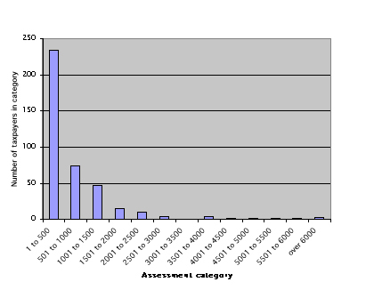
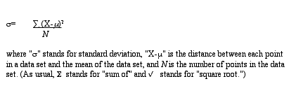
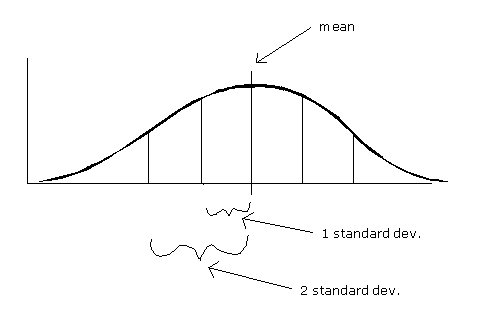

|
Why the
median and not the mean or the mode? Each of these figures tells us
something about the average property holding of a Russia Township
taxpayer in 1850. Indeed, depending on what you intend by the term
"typical," you could argue that the typical Russia Township
taxpayer owned $260, $389, or $667 in assessed property in 1850. It
is important to specify which measure you are using when you speak
of the "average" or "typical" member of a data
set.  As Graph
3 makes clear, there was a large range of property assessments in
Russia Township in 1850. And just as averages summarize the central
tendency of a data set, other measures are useful for summarizing
the dispersion or variability of a data set. The simplest
way to specify dispersion is to give the minimum and maximum of the
range, $13 and $7358 in the case of Russia Township property assessments.
But the minimum and maximum by themselves do not tell us much about
how tightly clustered or broadly spread out the bulk of data points
are; they just tell us where the extremes lie at either end of the
range.  If this
seems a bit confusing, don’t panic. For common sense purposes,
you may wish to conceptualize standard deviation in one of three ways.
The first is to think of it as a measure of the average of the distances
between each data point and the mean of the data set. The standard
deviation is not the mean of the distances of the data points
from the mean, but it is a kind of average.  Statisticians
have established that in all normal distributions approximately 68
percent of the data will fall within one standard deviation on either
side of the mean, and approximately 95 percent of the data will fall
within two standard deviations on either side of the mean. That does
not mean all normal distributions are identical, however. The bell
curve can be flatter or steeper depending on the relative dispersion
of the data. If the data are spread out, then the curve will be flatter
and the standard deviation larger. If the data are tightly clustered
around the mean, then the curve will be sharper and the standard deviation
smaller. But the proportion of data within one standard deviation
(68 percent) and within two standard deviations (95 percent) remains
the same across all normal distributions. (Click
to see an example of what happens to a normal distribution curve when
you change the standard deviation. This link will take you to Berrie's
Statistics Page and requires Quicktime player.)
|